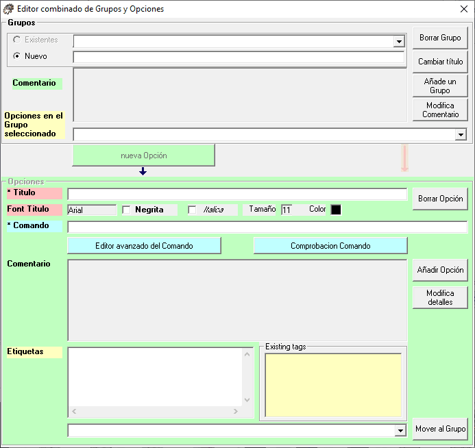
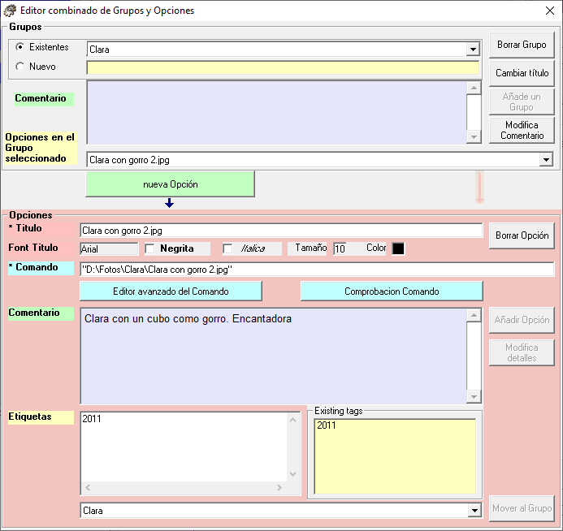

Este formulario está pensado para facilitar la entrada combinada de Grupos y Opciones, de forma que se facilita el trabajo de crear muchas Opciones.
En caso de que se elija la opción "Usando el editor de Grupos y Opciones (Avanzado)" al entrar en la ejecución del programa (ver "Elección del procedimiento de edición"), se presentará el formulario "Editor combinado de Grupos y Opciones" que se muestra a continuación.
En caso de que el fichero de configuración no tenga todavía ningún Grupo definido, se presentará forzando la definición de un "Nuevo" Grupo.

En el caso de que el fichero de configuración ya contenga Grupos, se presentará como muestra la siguiente figura.

En la parte superior se presentará el primer Grupo de entre todos los definidos (por orden alfabético). Si este Grupo tiene ya alguna Opción definida (como el caso mostrado), se presentará en el desplegable "Opciones en el Grupo seleccionado" la primera de estas Opciones. Como consecuencia, la parte del formulario "Opciones" aparecerá con color de fondo rosa y sus componentes gráficos contendrán los valores correspondientes a dicha Opción.
Este formulario contiene dos partes diferenciadas:
Objetivos de esta aplicación
Elección del procedimiento de edición
Grupos : Creación, edición y eliminación
Opciones : Creación, edicion y eliminación
Creación de Opciones
Menu 'Añadir Opción'
Edición del Comentario
Edición de etiquetas
Grupos: añadir, editar, borrar
Opciones: añadir, editar, borrar